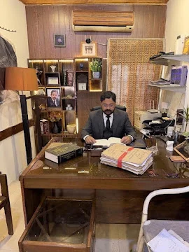

Bahawalpur · Est. 1997
Advocate High Court
Mian Aqil
Nawaz
28+
years of trusted legal practice
Practice Areas
Strategic Representation
Civil
Criminal
Family
Property
Constitutional
Cyber Crime
FIA & NAB
Service Matters

In Court For You
From Trial
to High Court
District & Sessions Courts
Special Courts
Lahore High Court, Bahawalpur Bench
Mian Law Associates
Book a Consultation
+92 333 3621111
Chamber No. 39, District Courts, Bahawalpur
mlabwp.com.pk